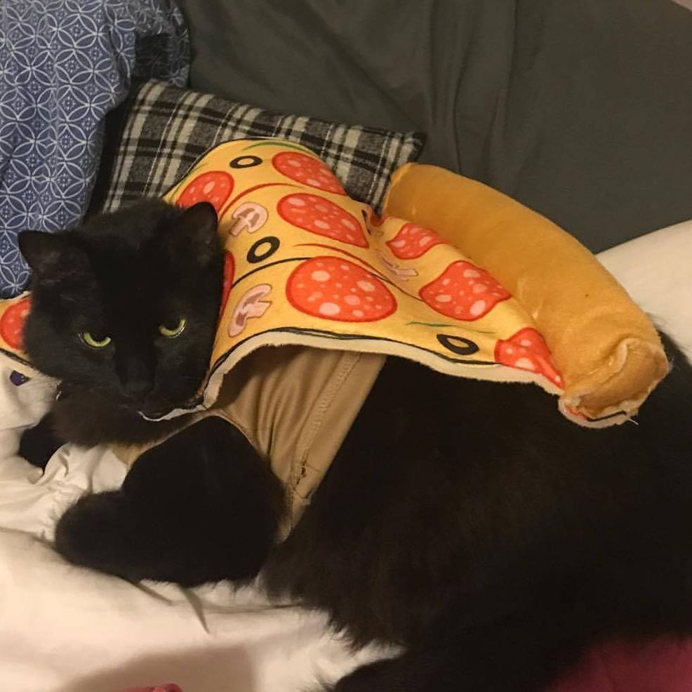
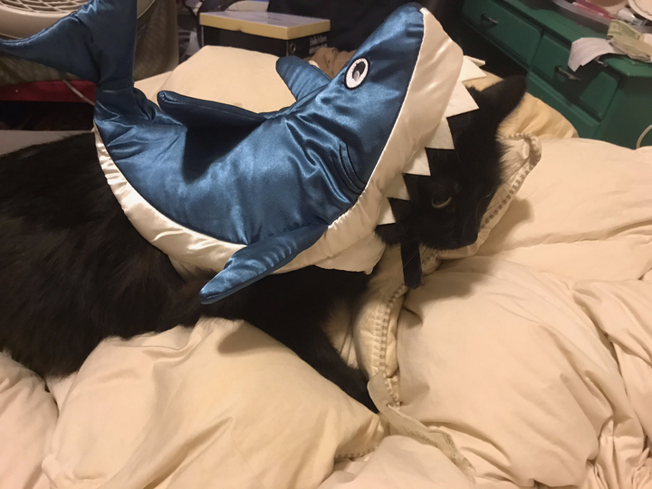
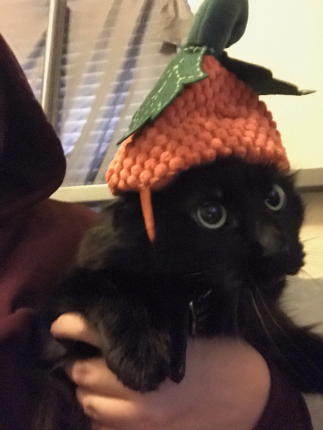

Responsive design!!
These lovely kitties are up for adoption. Aren't they the cutest?
Pumpkin Cat

Shark Cat

Pizza Cat

License
Vet
Cat-lander
Discussion
Get yo cat license
Check up on your sick cat
Arrange your cat-lander
Talk with other cat enthusiasts
Let's have some cat facts!!
Cats are the most popular pet in the United States: There are 88 million pet cats and 74 million dogs.
There are cats who have survived falls from over 32 stories (320 meters) onto concrete.
A group of cats is called a clowder.
Cats have over 20 muscles that control their ears.
Cats sleep 70% of their lives.
A cat has been mayor of Talkeetna, Alaska, for 15 years. His name is Stubbs.
And one ran for mayor of Mexico City in 2013.
Our old pal, flex-box